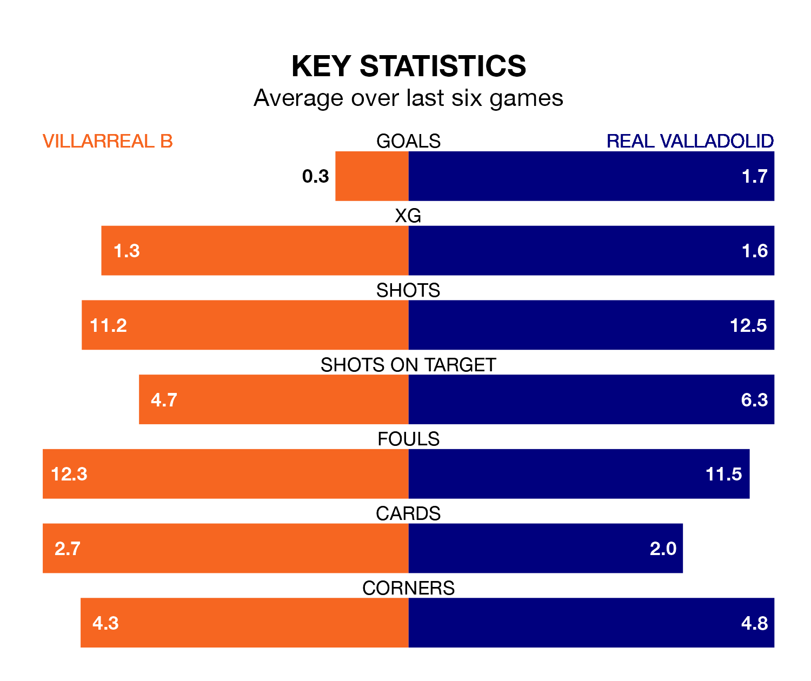

Real Valladolid are strong favourites to take all three points despite Villarreal B's home advantage in Monday's late match at Estadio de la Cerámica.
*Betting Company* are offering odds of 1.71 on Valladolid sealing the win, with the visitors sitting second in the Segunda División table.
Villarreal B, who are 18th in the league and 15 points behind Real Valladolid, are priced at 2.54 to win. A draw is set at 7.5.
With 25 goals in 19 games so far this season, Valladolid are scoring more than average in the league with 1.3 goals per game. And they are conceding fewer than average, letting in 21 goals at a rate of 1.1 per game.
Villarreal B, meanwhile, are below average scorers, with 1.1 goals per game, compared to a league average of 1.2. They have conceded 1.5 goals per game.
The hosts are in mixed form in the Segunda División, with two wins and a draw from their last six games.
With four wins and a draw over that period, Real Valladolid's form is much better – they have taken 13 points from 18, compared to Villarreal B's seven.
In Álex Forés Mendoza, Villarreal B have one of the league's sharpest shooters so far this season. He has notched seven goals in 19 appearances, to sit ninth in the scoring charts.
His goal rate of one every 171 minutes is slightly quicker than that of Mamadou Sylla Diallo, the away team's top scorer with a goal every 168 minutes, and a total of six goals in 14 games.
Villarreal B's last match was on December 8, a 2-0 loss against Albacete Balompié.
Valladolid beat SD Amorebieta 2-1 last time out, on December 9, with Israel Salazar Piriz and Stanko Jurić on the scoresheet.
Monday's match will be refereed by Raúl Martín González Francés, who has taken charge of eight Segunda División games so far this season, issuing two red cards and booking 34 players. He has awarded three penalties.
The last Valladolid game González Francés refereed was the 1-0 win at home against FC Cartagena on September 16. He is yet to oversee a match featuring Villarreal B this season.
